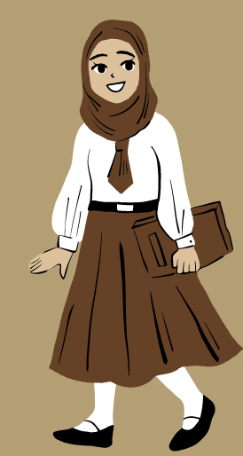

Karakterpres
Det kommer næppe som en overraskelse at mange studerende føler sig pressede pga. Karakter. Når man starter på en uddannelse, underskriver man nemlig også under på presset af karakter.
Karakter, det er ikke altid det rareste at tænke på. Man har forventninger om at få det flotteste 12-tal, men ender med et 7-tal.
Planlæg din tid ordentlig, med pauser! Det hjælper ikke at du studerer for en prøve, mens du hele tiden går kold.
Du skal nemlig ikke bare læse, du skal indtage informationen, og det kan være meget for hjernen hvis ikke du stopper op og spørger: “Hvad har jeg lige læst?”.
Lad ikke et tal definer dig. Du er ikke et 12-tal eller et 4-tal, din viden kan ikke vides ved bare at se et tal.
Ja det er rart i øjeblikket at have fået et 12-tal, men feedbacken er hvad du kommer længst med.

FEEDBACK
Hjalp denne artikel dig?